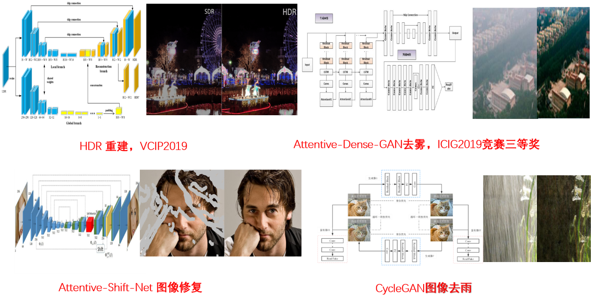
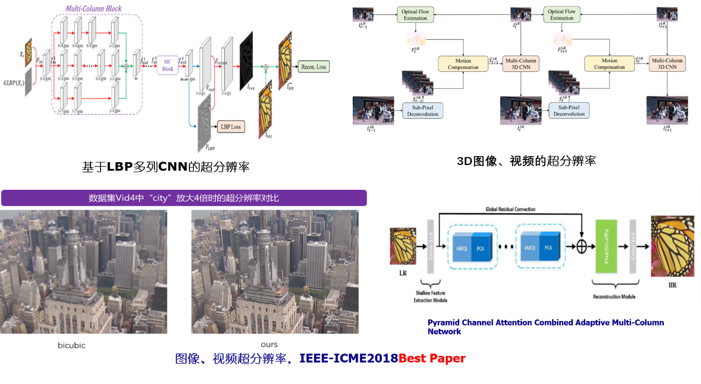
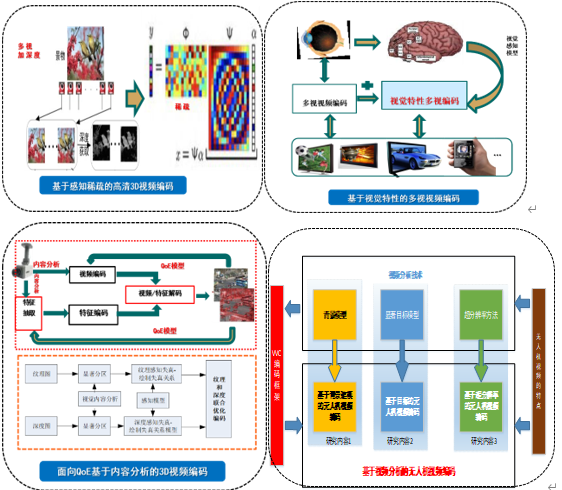
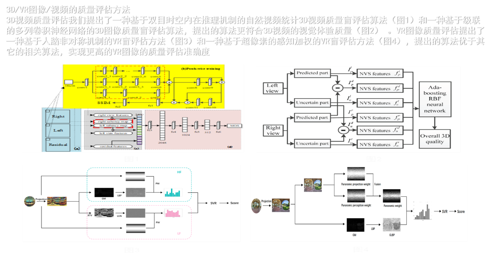

主页成员项目科研教学主要论文发明专利招贤纳士活动联系方式【English version】
1.智能视频增强技术处理
 2.新一代的2D/3D/VR编码研究
研究高效且精准的视觉感知（JND， SAL）模型, 提出显著性调制、凹形、深度、双目抑制、基于自由能量等的视觉感知的模型，并在此基础上提出了感知预处理、颜色校正、量化、RD优化、去块、模式选择的视频编码方法，这些方法大大提高了视频的编码效率，解决现有编码方法未能充分利用视频感知特性、效率低、复杂度高等问题，具体表现在提高了视频的主观质量，降低了编码复杂度，同时节省了码率。
3.2D、3D、VR视频质量评价
研究设计能自动准确的预测2D、3D、VR视频质量的客观评价方法，结合当前人类对视觉系统的生理心理学认知，重点研究全参考和无参考的客观立体图像质量评价方法。提出了基于多列CNN的无参3D视频质量评估方法；提出了基于内容分析的视频质量评估方法；提出了联合多特征学习的质量评估方法；提出了时空推导机制的视频质量评估方法；提出了联合结构与纹理特征的无参图像评估方法等。
